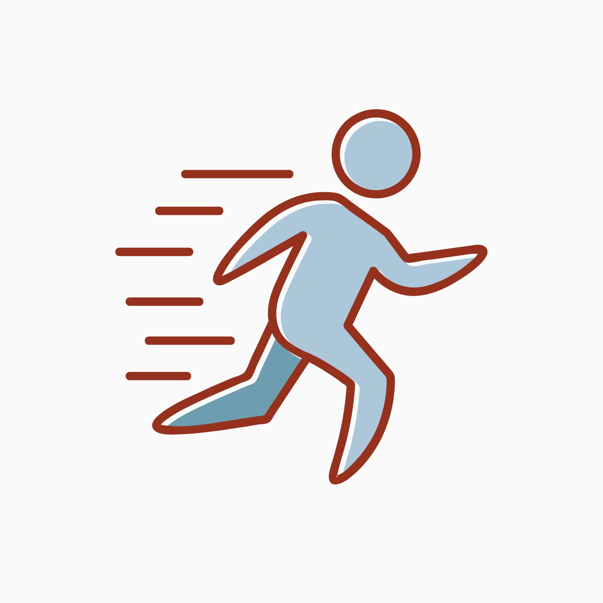
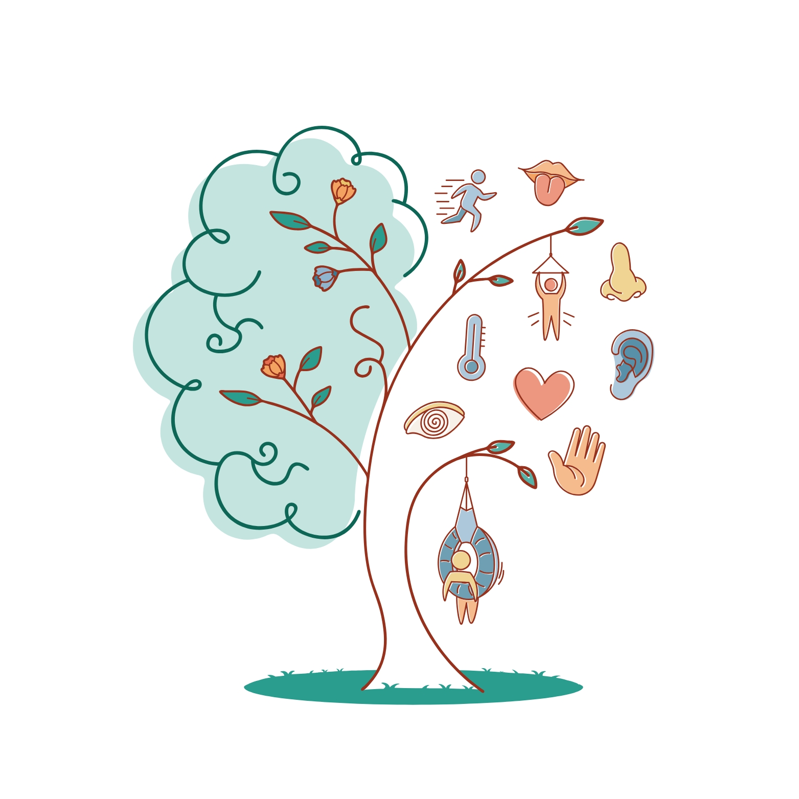
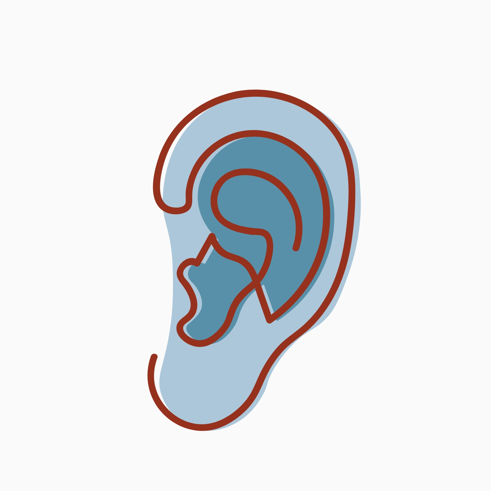

01
Terapia Ocupacional
Intervenções voltadas à participação, autonomia e desempenho nas atividades cotidianas em diferentes fases da vida.
Integração Sensorial de Ayres®Cuidado que acolhe cada jeito de ser
Um espaço terapêutico e multidisciplinar em Guaratinguetá, dedicado ao cuidado, à autonomia e ao bem-estar de crianças, adolescentes e adultos.


MovimentoEspaço IntegraSer
Acolhemos cada pessoa para além de um diagnóstico ou dificuldade: observamos sua história, seus sentidos, suas relações e suas potências.
Nosso trabalho integra especialidades e aproxima profissionais, pessoa atendida, família ou rede de apoio e rotina. Assim, cada plano terapêutico pode fazer sentido dentro e fora da clínica.
Entenda como cuidamosTerapias especializadas
Especialidades que dialogam entre si para construir caminhos possíveis, respeitosos e singulares.
Deslize para ver mais
01
Intervenções voltadas à participação, autonomia e desempenho nas atividades cotidianas em diferentes fases da vida.
Integração Sensorial de Ayres®02
Acolhimento emocional e suporte ao desenvolvimento, às relações e aos desafios vividos por crianças, adolescentes e adultos.
03
Acompanhamento da comunicação, linguagem, fala e demais habilidades relacionadas à expressão e interação.
04
Recursos complementares que ampliam o cuidado e apoiam o equilíbrio, o vínculo e o bem-estar.
A indicação de cada acompanhamento é definida após escuta e avaliação profissional.
Cada pessoa percebe, sente e participa do mundo de um jeito único.
Nosso jeito de cuidar
Deslize para ver as etapas
Começamos pela história, pelas necessidades e pelas potências de cada pessoa, em sua etapa de vida e contexto.
O olhar clínico considera desenvolvimento, participação, contexto e demandas do cotidiano em cada faixa etária.
Profissionais compartilham perspectivas e objetivos para um acompanhamento coerente.
O percurso é revisto ao longo do tempo, valorizando avanços significativos para a vida real.
Integração Sensorial de Ayres®
A Integração Sensorial de Ayres® é uma abordagem da Terapia Ocupacional que considera como o sistema nervoso recebe, organiza e responde às informações sensoriais.
Quando indicada, a terapia utiliza experiências significativas e intencionais para favorecer respostas adaptativas, participação e autonomia.
Tirar uma dúvida

AudiçãoDúvidas frequentes
Algumas respostas para ajudar você ou sua família a dar o primeiro passo com tranquilidade.
O primeiro contato ajuda a compreender a demanda e a direcionar a pessoa para a avaliação ou especialidade mais adequada.
Sim. Conforme a idade, a necessidade e o consentimento da pessoa atendida, orientações e trocas com familiares ou responsáveis ajudam a conectar os objetivos terapêuticos ao cotidiano.
Quando necessário e autorizado pela pessoa atendida ou por seus responsáveis, a equipe compartilha objetivos e perspectivas para favorecer um cuidado integrado.
O espaço está localizado em Guaratinguetá, São Paulo. Os dados completos de endereço e atendimento serão confirmados no contato.
Vamos conversar?
Conte um pouco sobre o que você ou sua família procura. Nossa equipe orientará sobre o melhor caminho para cada necessidade e fase da vida.
Atendimento em Guaratinguetá • SP